set.seed(42) # Para reproducibilidad
discrimination <- rnorm(n = 40, mean = 5.12, sd = 1.01) # Datos para el grupo 1
data0 <- as.data.frame(discrimination)
data0$condition <- 1
discrimination <- rnorm(n = 40, mean = 4.28, sd = 1.03) # Datos para el grupo 2
data1 <- as.data.frame(discrimination)
data1$condition <- 2
data <- rbind(data0, data1)
data$condition <- factor(data$condition,
levels = c(1, 2),
labels = c("Chaos condition", "Order condition"))Comparación de medias
Estadística
R
Visualización
Un pequeño recorrido con algunas cosas importantes para comparar medias entre dos grupos: comprobar homogeneidad y normalidad, calcular el tamaño del efecto, test de equivalencias y varias formas de representarlo gráficamente.
0. Simulando los datos para nuestro ejemplo
Primero simulamos los datos, basándonos en los parámetros del primer estudio de Stapel y Lindenberg (2011) sobre cómo influye un contexto ordenado vs desordenado en la discriminación (también simulados, je). Esto es solo para tener unos datos con los que trabajar; en cada ejemplo se explica dónde tendríamos que situar nuestras variables.
1. Paquetes
library(effectsize) # Para calcular tamaños del efectoWarning: package 'effectsize' was built under R version 4.5.3library(ggstatsplot) # Para representaciones gráficasWarning: package 'ggstatsplot' was built under R version 4.5.3library(car) # Para comprobar homogeneidad de varianzas con leveneTest()
library(dplyr) # Para transformaciones de datosWarning: package 'dplyr' was built under R version 4.5.3library(ggplot2)Utilizaremos otros paquetes en otros apartados, que irán apareciendo. Hay que tener en cuenta que algunas funciones “solapan” entre paquetes.
Si no tenemos el paquete instalado, antes del comando library(paquete) lo descargamos con install.packages("paquete").
Dos cosas básicas a tener en cuenta:
- En nuestro ejemplo, la variable dependiente se llama
discriminationy la independientecondition. Para usar el código con tus datos tendrás que sustituir estos nombres por los de tus variables. - Cuando usamos el símbolo
$después del nombre de la base de datos, pedimos al programa que busque dentro de esa base de datos la variable que indicamos a continuación.
2. Homogeneidad de las varianzas y normalidad
Para la normalidad, utilizamos el test de Shapiro:
by(data$discrimination, data$condition, shapiro.test)data$condition: Chaos condition
Shapiro-Wilk normality test
data: dd[x, ]
W = 0.97314, p-value = 0.4497
------------------------------------------------------------
data$condition: Order condition
Shapiro-Wilk normality test
data: dd[x, ]
W = 0.93908, p-value = 0.03221Para comprobar la homogeneidad de las varianzas, tenemos varias opciones.
F-test:
var.test(data$discrimination ~ data$condition)
F test to compare two variances
data: data$discrimination by data$condition
F = 1.7123, num df = 39, denom df = 39, p-value = 0.09716
alternative hypothesis: true ratio of variances is not equal to 1
95 percent confidence interval:
0.9056153 3.2374101
sample estimates:
ratio of variances
1.712264 Test de Levene (por defecto usa la mediana, más robusto; se puede cambiar a center = "mean"):
leveneTest(y = data$discrimination, group = data$condition, center = "median")Levene's Test for Homogeneity of Variance (center = "median")
Df F value Pr(>F)
group 1 2.1149 0.1499
78 Test de Bartlett:
bartlett.test(data$discrimination ~ data$condition)
Bartlett test of homogeneity of variances
data: data$discrimination by data$condition
Bartlett's K-squared = 2.7515, df = 1, p-value = 0.09716También podemos realizar el test de Brown-Forsyth con la función hov() del paquete HH o el Fligner-Killeen test con fligner.test().
Si el resultado del test elegido es p < .05, no podemos asumir que las varianzas son iguales. Si usamos t.test(), el propio programa elige entre una prueba u otra en función de la igualdad de varianzas, pero podemos forzarlo con var.equal = TRUE o var.equal = FALSE.
3. Diferencias de medias
?t.test # Para ver todos los argumentos disponiblesDos grupos independientes, asumiendo varianzas iguales:
t.test(discrimination ~ condition, data = data, alternative = "two.sided", var.equal = TRUE)
Two Sample t-test
data: discrimination by condition
t = 2.9217, df = 78, p-value = 0.004551
alternative hypothesis: true difference in means between group Chaos condition and group Order condition is not equal to 0
95 percent confidence interval:
0.2287045 1.2069524
sample estimates:
mean in group Chaos condition mean in group Order condition
5.080069 4.362240 Sin asumir varianzas iguales (Welch):
t.test(discrimination ~ condition, data = data, alternative = "two.sided", var.equal = FALSE)
Welch Two Sample t-test
data: discrimination by condition
t = 2.9217, df = 72.968, p-value = 0.004631
alternative hypothesis: true difference in means between group Chaos condition and group Order condition is not equal to 0
95 percent confidence interval:
0.2281726 1.2074842
sample estimates:
mean in group Chaos condition mean in group Order condition
5.080069 4.362240 Medidas repetidas: la interfaz de fórmula no admite paired = TRUE, así que extraemos los vectores directamente:
chaos <- data$discrimination[data$condition == "Chaos condition"]
orden <- data$discrimination[data$condition == "Order condition"]
t.test(chaos, orden, alternative = "two.sided", paired = TRUE)
Paired t-test
data: chaos and orden
t = 2.8973, df = 39, p-value = 0.006145
alternative hypothesis: true mean difference is not equal to 0
95 percent confidence interval:
0.2166843 1.2189725
sample estimates:
mean difference
0.7178284 Test no paramétrico (Wilcoxon), si los datos no siguen una distribución normal:
wilcox.test(data$discrimination ~ data$condition, alternative = "two.sided")
Wilcoxon rank sum exact test
data: data$discrimination by data$condition
W = 1083, p-value = 0.006105
alternative hypothesis: true location shift is not equal to 04. La lógica subyacente
Este paso puede saltarse —hay que descargar varios paquetes y hay bastante código—, pero sirve para ilustrar la lógica de una comparación de medias.
El código de este apartado está tomado de una entrada del blog de Andrew Heiss. La idea fundamental, explicada también en el blog de Allen Downey, es que para cualquier test estadístico hacemos lo siguiente:
- Calcular un estadístico en nuestra muestra.
- Simular una población donde ese estadístico es nulo.
- Comparar nuestro estadístico con esa población nula.
- Calcular la probabilidad de que nuestro estadístico exista en la población nula.
- Decidir si es significativo (usando normalmente el estándar de .05).
library(infer)
library(scales)Calculamos la diferencia de medias en nuestra muestra:
difmed <- data %>%
specify(discrimination ~ condition) %>%
calculate("diff in means", order = c("Chaos condition", "Order condition"))
difmedResponse: discrimination (numeric)
Explanatory: condition (factor)
# A tibble: 1 × 1
stat
<dbl>
1 0.718Calculamos el intervalo de confianza usando una distribución bootstrapped:
medboot <- data %>%
specify(discrimination ~ condition) %>%
generate(reps = 1000, type = "bootstrap") %>%
calculate("diff in means", order = c("Chaos condition", "Order condition"))
boostrapped_confint <- medboot %>% get_confidence_interval()Using `level = 0.95` to compute confidence interval.medboot %>%
visualize() +
shade_confidence_interval(boostrapped_confint,
color = "#8bc5ed", fill = "#85d9d2") +
geom_vline(xintercept = difmed$stat, linewidth = 1, color = "#77002c") +
labs(
title = "Distribución 'bootstrapped' de la diferencia de medias",
x = "Chaos condition - Order condition", y = "Count",
subtitle = "La línea roja muestra la diferencia observada; la zona sombreada el IC al 95%") +
theme_classic()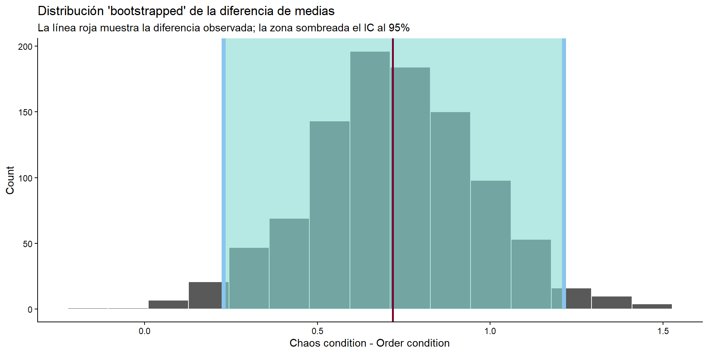
Simulamos un mundo donde el estadístico es nulo:
cond_diffs_null <- data %>%
specify(discrimination ~ condition) %>%
hypothesize(null = "independence") %>%
generate(reps = 5000, type = "permute") %>%
calculate("diff in means", order = c("Chaos condition", "Order condition"))
cond_diffs_null %>%
visualize() +
geom_vline(xintercept = difmed$stat, linewidth = 1, color = "#77002c") +
scale_y_continuous(labels = comma) +
labs(
x = "Diferencia simulada en las medias (Chaos condition - Order condition)",
y = "Count",
title = "Distribución nula de las diferencias de medias basada en la simulación",
subtitle = "La línea roja muestra la diferencia observada") +
theme_classic()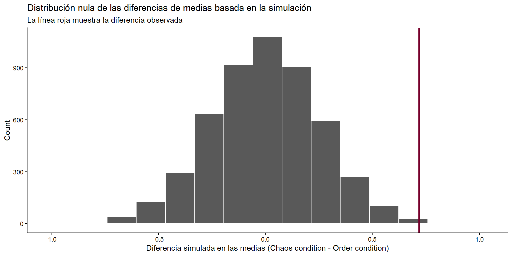
Vemos que parece muy poco probable observar este valor en un mundo sin diferencias entre grupos.
cond_diffs_null %>%
get_p_value(obs_stat = difmed, direction = "both") %>%
mutate(p_value_clean = pvalue(p_value))# A tibble: 1 × 2
p_value p_value_clean
<dbl> <chr>
1 0.0044 0.004 5. Tamaño del efecto
Si asumimos varianzas iguales, lo usual es la d de Cohen. Si no podemos asumirlo, se recomienda la g de Hedges (Delacre et al., 2021).
cohens_d(discrimination ~ condition, data = data, pooled_sd = TRUE)Cohen's d | 95% CI
------------------------
0.65 | [0.20, 1.10]
- Estimated using pooled SD.hedges_g(discrimination ~ condition, data = data, pooled_sd = FALSE)Hedges' g | 95% CI
------------------------
0.65 | [0.20, 1.09]
- Estimated using un-pooled SD.5.1. Interpretar y transformar el tamaño del efecto
Usar los puntos de referencia de Cohen puede ser problemático, ya que no tienen en cuenta el marco de referencia específico. Una alternativa es usar las guías basadas en los tamaños del efecto habituales en psicología social (Lovakov & Agadullina, 2021), donde los percentiles 25, 50 y 75 corresponden a d = 0.15, 0.36 y 0.65.
effectsize::interpret_cohens_d(1.10, rules = "cohen1988")[1] "large"
(Rules: cohen1988)effectsize::interpret_cohens_d(1.10, rules = "lovakov2021")[1] "large"
(Rules: lovakov2021)También podemos transformar la d de Cohen a un coeficiente de correlación:
d_to_r(1.10)[1] 0.48191876. Test de equivalencias
Para entender los test de equivalencias, se puede consultar Lakens (2017) y Lakens, Scheel e Isager (2018). En concreto nos interesan los TOST (two one-sided tests).
La idea: establecer a priori un límite superior e inferior de equivalencia basándonos en el mínimo efecto de interés (SESOI). Si nuestro efecto cae entre esos intervalos, podemos decir que es lo suficientemente cercano a cero para ser equivalente en la práctica.
En nuestro caso, siguiendo a Stapel y Lindenberg (2011), determinamos el SESOI como el tamaño del efecto detectable con un poder del 33% (Simonsohn, 2015), que sería d = 0.34.
library(TOSTER)
# tsum_TOST() es la función actualizada (TOSTtwo() está deprecada en TOSTER >= 0.4)
tsum_TOST(
m1 = 5.218811, m2 = 4.031867,
sd1 = 1.088976, sd2 = 1.072184,
n1 = 40, n2 = 40,
low_eqbound = -0.34, high_eqbound = 0.34,
eqbound_type = "SMD",
alpha = 0.05,
var.equal = TRUE)
Two Sample t-test
The equivalence test was non-significant, t(78) = 3.392, p = 9.99e-01
The null hypothesis test was significant, t(78) = 4.912, p = 4.86e-06
NHST: reject null significance hypothesis that the effect is equal to zero
TOST: don't reject null equivalence hypothesis
TOST Results
t df p.value
t-test 4.912 78 < 0.001
TOST Lower 6.433 78 < 0.001
TOST Upper 3.392 78 0.999
Effect Sizes
Estimate SE C.I. Conf. Level
Raw 1.187 0.2416 [0.7847, 1.5892] 0.9
Hedges's g 1.088 0.2403 [0.6933, 1.4759] 0.9
Note: SMD confidence intervals are an approximation. See vignette("SMD_calcs").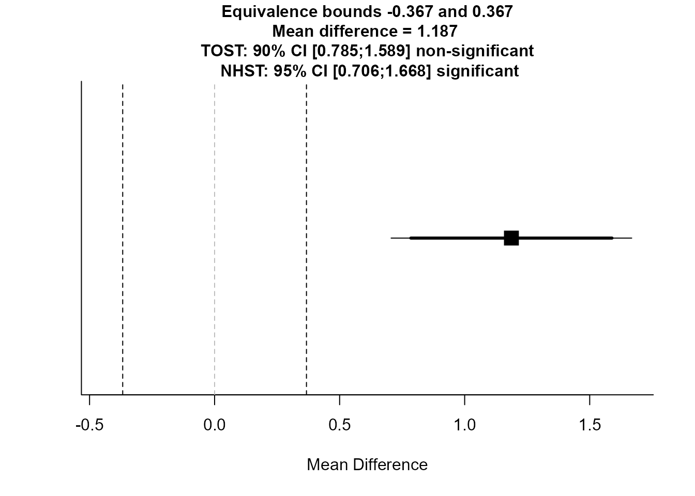
El output nos indica que el efecto no es estadísticamente equivalente a cero.
7. Representaciones gráficas
7.1. Barplot
library(ggpubr)
infograph <- data %>%
group_by(condition) %>%
summarise(n = n(), mean = mean(discrimination), sd = sd(discrimination)) %>%
mutate(se = sd / sqrt(n)) %>%
mutate(ic = se * qt((1 - 0.05) / 2 + .5, n - 1))
pal <- c("#009E73", "#E69F00") # Paleta colorblind-friendly
barplt <- ggplot(infograph) +
geom_col(aes(x = condition, y = mean, fill = condition), alpha = 1, width = 0.6) +
scale_fill_manual(values = pal) +
geom_errorbar(aes(x = condition, ymin = mean - ic, ymax = mean + ic),
width = 0.2, colour = "black", alpha = 0.9, linewidth = 0.5) +
ggtitle("Differences between experimental conditions (using confidence intervals)") +
xlab("Experimental Condition") +
ylab("Discrimination scores")
barplt + theme_pubr(base_size = 10, border = FALSE, margin = TRUE, legend = "none")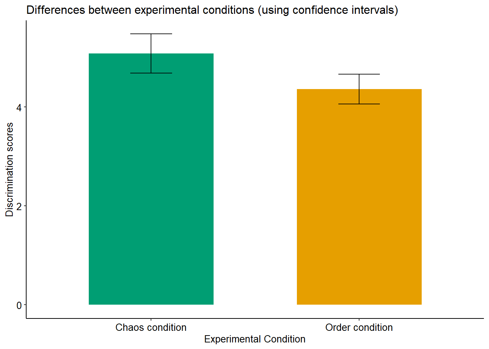
7.2. Gráficos de violín
La forma más rápida con ggbetweenstats del paquete ggstatsplot:
ggbetweenstats(data = data, x = condition, y = discrimination)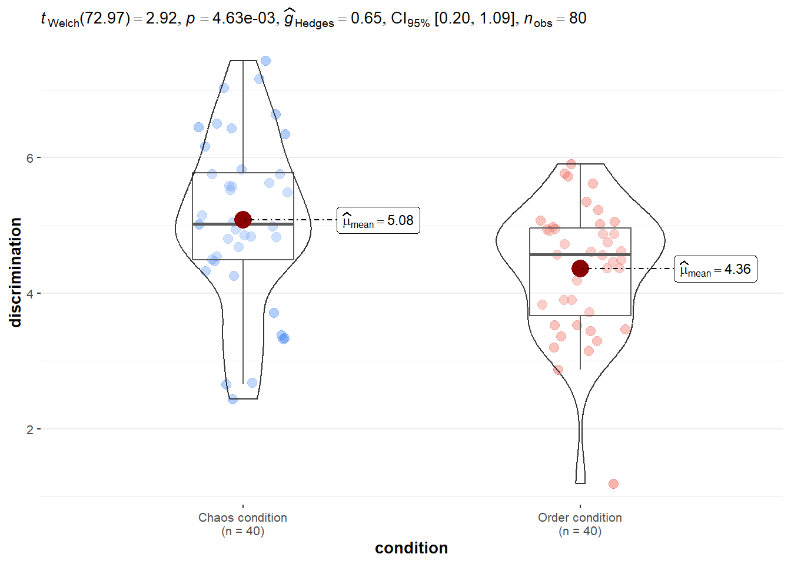
Con más opciones de personalización:
ggbetweenstats(
data, condition, discrimination,
plot.type = "boxviolin",
type = "parametric",
title = "Effect of disordered (vs ordered) context in discrimination scores",
xlab = "Experimental Condition",
ylab = "Discrimination scores",
centrality.point.args = list(size = 5, color = "darkred"),
centrality.label.args = list(size = 3, nudge_x = 0.4, segment.linetype = 4,
min.segment.length = 0),
point.args = list(position = ggplot2::position_jitterdodge(dodge.width = 0.4),
alpha = 0.4, size = 2, stroke = 0),
violin.args = list(width = 0.7, alpha = 0.5),
package = "RColorBrewer", palette = "Dark2")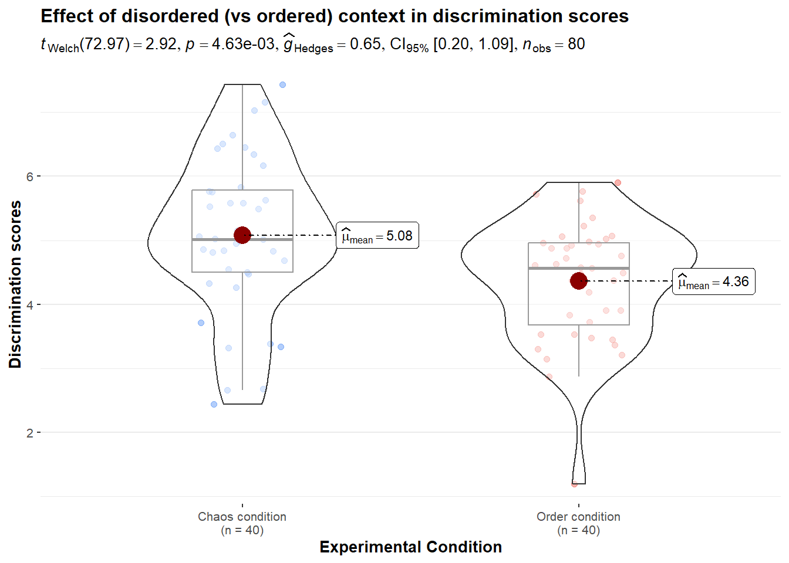
Otra forma con ggplot2:
library(viridis)
ggplot(data, aes(x = condition, y = discrimination, fill = condition)) +
geom_violin() +
geom_boxplot(width = 0.1, color = "grey", alpha = 0.5) +
scale_fill_manual(values = c("#56B4E9", "#D55E00")) +
ggtitle("Discrimination scores in both conditions") +
xlab("") +
ylab("Discrimination scores") +
theme_pubr(base_size = 11, border = FALSE, margin = TRUE, legend = "none")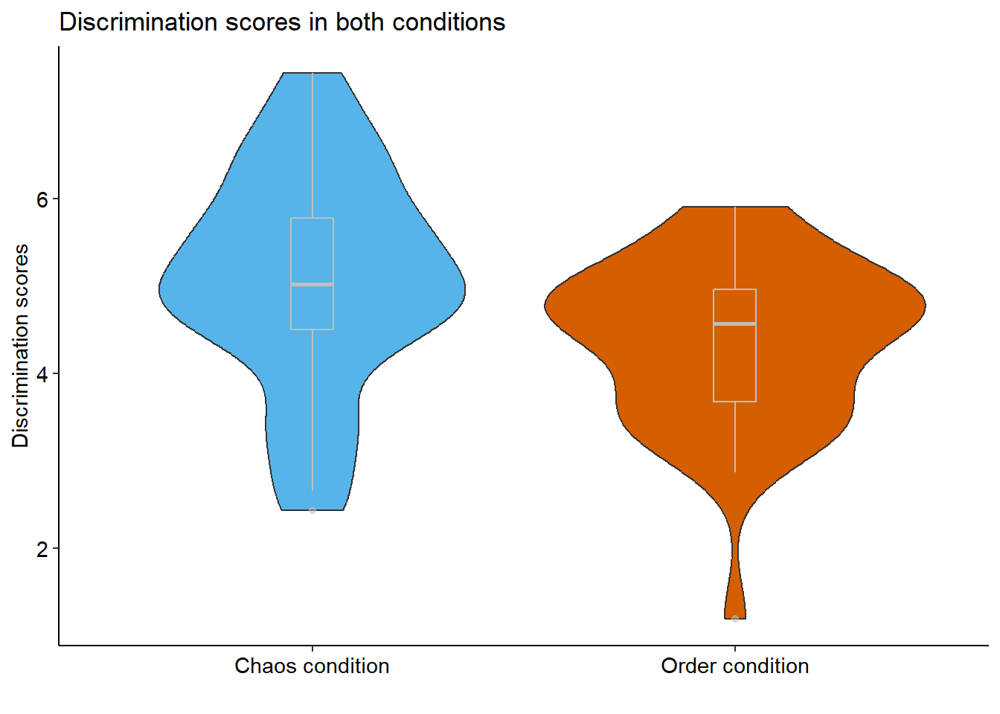
Raincloud plot (violín + boxplot + puntos):
library(ggdist)
ggplot(data, aes(x = condition, y = discrimination, fill = condition)) +
stat_halfeye(adjust = .5, width = .6, .width = 0,
justification = -.3, point_colour = NA) +
geom_boxplot(width = .20, outlier.shape = NA) +
geom_point(size = 2, alpha = .5,
position = position_jitter(seed = 1, width = .1)) +
coord_cartesian(xlim = c(1.2, NA), clip = "off") +
scale_fill_manual(values = c("#56B4E9", "#D55E00")) +
ggtitle("Discrimination scores in both conditions") +
xlab("") +
ylab("Discrimination scores") +
theme_pubr(base_size = 11, border = FALSE, margin = TRUE, legend = "none")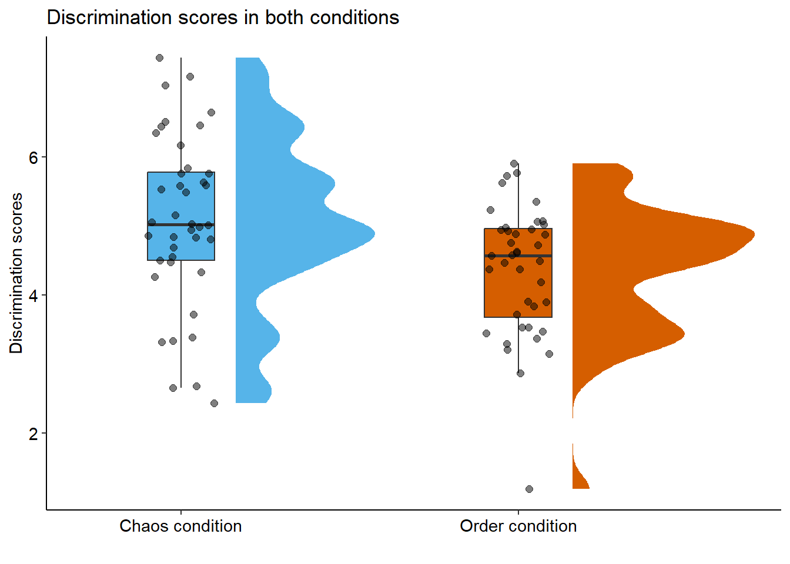
Añadiendo la significación estadística con ggsignif:
library(ggsignif)
ggplot(data, aes(x = condition, y = discrimination, fill = condition)) +
stat_halfeye(adjust = .5, width = .6, .width = 0,
justification = -.3, point_colour = NA) +
geom_boxplot(width = .20, outlier.shape = NA) +
geom_signif(comparisons = list(c("Chaos condition", "Order condition")),
map_signif_level = TRUE) +
geom_point(size = 2, alpha = .5,
position = position_jitter(seed = 1, width = .1)) +
coord_cartesian(xlim = c(1.2, NA), clip = "off") +
scale_fill_manual(values = c("#56B4E9", "#D55E00")) +
ggtitle("Discrimination scores in both conditions") +
xlab("") +
ylab("Discrimination scores") +
theme_pubr(base_size = 11, border = FALSE, margin = TRUE, legend = "none")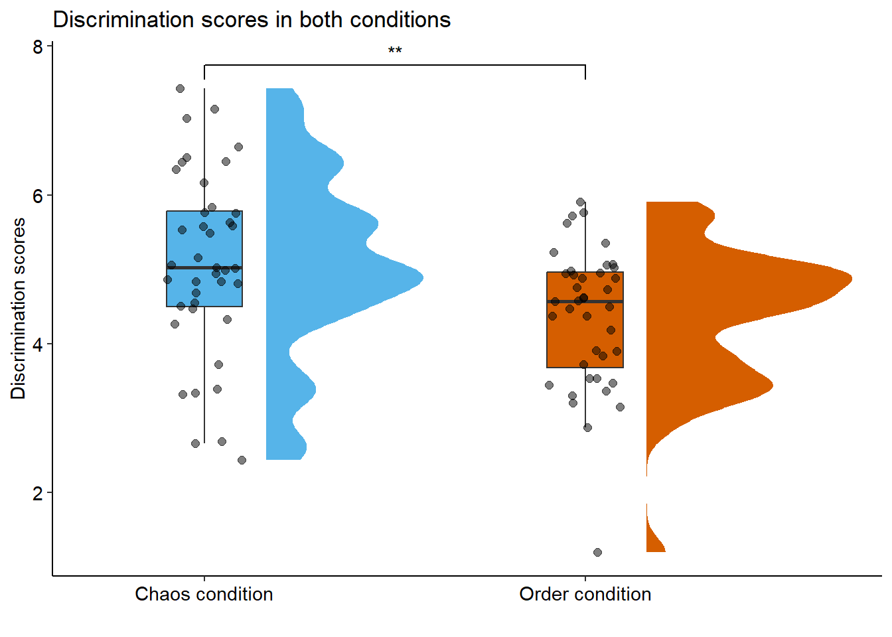
Incluyendo el resultado estadístico directamente con statsExpressions:
library(statsExpressions)
expresion <- two_sample_test(
data = data,
x = condition,
y = discrimination,
alternative = "two.sided")
ggplot(data, aes(x = condition, y = discrimination, fill = condition)) +
stat_halfeye(adjust = .5, width = .6, .width = 0,
justification = -.3, point_colour = NA) +
geom_boxplot(width = .20, outlier.shape = NA) +
geom_point(size = 2, alpha = .5,
position = position_jitter(seed = 1, width = .1)) +
coord_cartesian(xlim = c(1.2, NA), clip = "off") +
scale_fill_manual(values = c("#56B4E9", "#D55E00")) +
ggtitle("Discrimination scores in both conditions",
subtitle = expresion$expression[[1]]) +
xlab("") +
ylab("Discrimination scores") +
theme_pubr(base_size = 11, border = FALSE, margin = TRUE, legend = "none")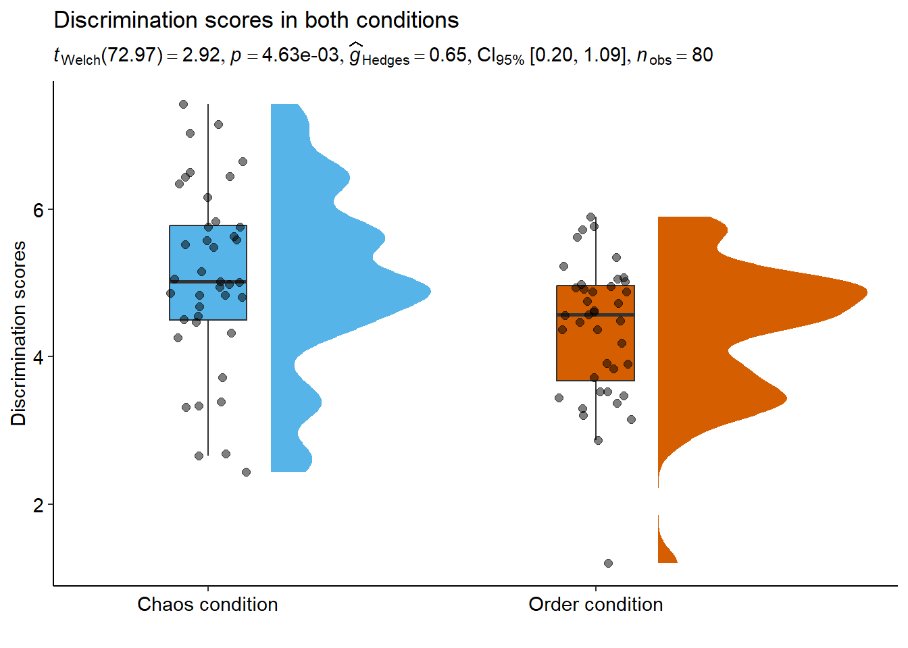
7.3. Estimation plots con dabestr
Note
La API de dabestr cambió significativamente en la versión 0.3. El código siguiente es orientativo; consulta la documentación actualizada si usas una versión reciente del paquete.
library(dabestr)
two.group <- data %>%
dabest(condition, discrimination,
idx = c("Chaos condition", "Order condition"),
paired = FALSE)
two.group.meandiff <- mean_diff(two.group)
plot(two.group.meandiff, rawplot.ylabel = "Discrimination scores")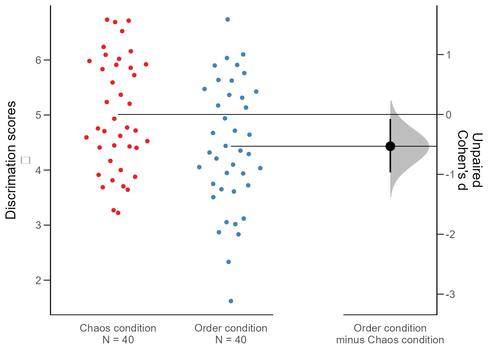
7.4. Guardar los gráficos
La forma más cómoda es ggsave() directamente sobre un objeto de ggplot2:
# Primero guardamos el gráfico como objeto
Grafico <- ggplot(data, aes(x = condition, y = discrimination, fill = condition)) +
stat_halfeye(adjust = .5, width = .6, .width = 0,
justification = -.3, point_colour = NA) +
geom_boxplot(width = .20, outlier.shape = NA) +
geom_point(size = 2, alpha = .5,
position = position_jitter(seed = 1, width = .1)) +
coord_cartesian(xlim = c(1.2, NA), clip = "off") +
scale_fill_manual(values = c("#56B4E9", "#D55E00")) +
ggtitle("Discrimination scores in both conditions") +
xlab("") + ylab("Discrimination scores") +
theme_pubr(legend = "none")
# Luego lo exportamos
ggsave("Figure1.png", plot = Grafico, width = 10, height = 7, dpi = 300)